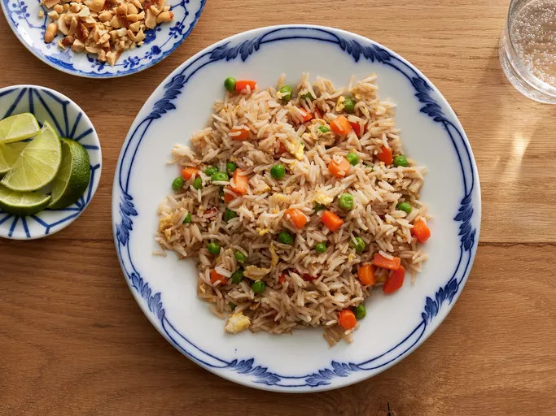

A quick fried rice recipe like you get at your favorite Chinese restaurant. Leftover rice, plus a couple of eggs, baby carrots, peas, and soy sauce is all you need. Garnish with sliced green onions, if desired.
Fried rice is the ultimate family-friendly dish that yields maximum flavor without fuss. Loaded with tender sauteed veggies and delicious bits of scrambled egg, this top-rated recipe makes it easy to recreate a takeout favorite from home in just 20 minutes.
Over a thousand home cooks agree — this simple, savory recipe is a winner. But what if you don't have a wok on hand? Learn the best methods for making fried rice at home, from a griddle to Instant Pot preparation.
Fried rice is a traditional Chinese preparation of cooked rice, vegetables, protein, soy sauce, and aromatics. The ingredients are stir-fried in a large pan or wok for even flavor distribution. An ideal use for leftovers, fried rice is quick, customizable, and incredibly simple to put together with whatever is in your fridge.
Making fried rice is a breeze with the recipe you'll find below. The process is simple — preheat your pan before swirling in oil and aromatics, then add uncooked proteins if applicable. Add in rice and vegetables, vigorously tossing ingredients for that toasty, golden-brown color that signals big flavor.
:max_bytes(150000):strip_icc():format(webp)/79543-fried-rice-restaurant-style-step-1-4aa20a92e97f48ec9ba5a54d5380fb48.jpg)
:max_bytes(150000):strip_icc():format(webp)/79543-fried-rice-restaurant-style-step-2-93-fbbc06faf5be4c52b62a0564d0b732bb.jpg)
:max_bytes(150000):strip_icc():format(webp)/79543-fried-rice-restaurant-style-step-4-99-d4b0488528064e9f99cea7c7f4b0c5aa.jpg)
:max_bytes(150000):strip_icc():format(webp)/79543-fried-rice-restaurant-style-step-6-102-2e5637fd5ba144c998c7c2ee9b68d354.jpg)
:max_bytes(150000):strip_icc():format(webp)/79543-fried-rice-restaurant-style-DDMFS-4x3-b79a6ea27e0344399257ca1df67ca1cd.jpg)